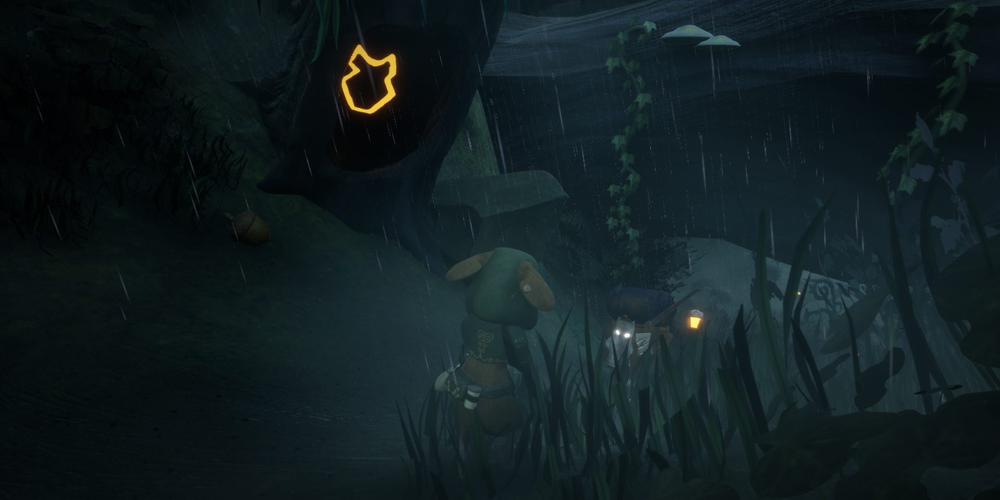

Eyes of the Forest
Eyes of the Forest is a third person narrative driven experience where you play as a field mouse, navigating and stealthing along the bottom of a long abandoned forest. Secure a mysterious artifact with your mentor, while avoiding the horrific hunters that stalk the forest…
Eyes of the Forest currently in development. Serving primarily a level design role, with some secondary user research responsibilities. Explore a gallery of screenshots below, and captures from pre-released versions of the game.
Steam page & more details coming 2026!
